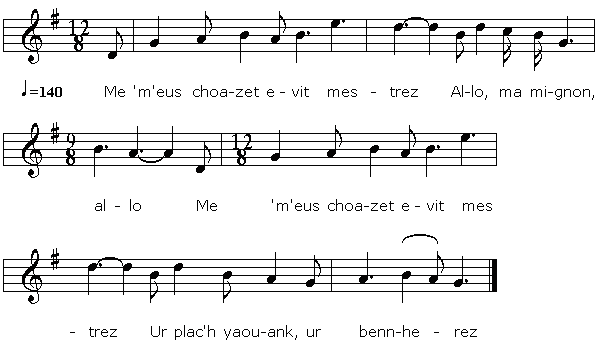

Son ar c'hloarek
La chanson du clerc
The Clerk's Song
Collectée par Théodore Hersart de La Villemarqué,
Tirée du 1er Carnet de Keransquer.

Mélodie
Mélodie inconnue remplacée par "Me m'eus choazet evit mestrez"
Dans le recueil "Digor an abadenn",
chansons rassemblées par Cheun ar C'hann, édité en 1950
Recueillie auprès de Loeiza Kadeg à Hanvec, en 1942
Arrangement Christian Souchon (c) 2012
Source: site de M. Pierre Quentel (voir liens)
|
BREZHONEK SON AR C'HLOAREK [1] p. 59 1. Pemp bloaz zo war nugent abaoe ma emaon o studiñ Ha pemp bloaz aboe m'on kloarek, med bremañ ne vin mui. 2. Me zo ur c'hloarek yaouank, avañset en studi Hag ema lakaet em spered e-berr da zimesiñ. Me zo ur c'hloarek yaouank, en gark deus ur karg vras: Dalc'han-me an anaon paour, poan purgador, siwazh! 3. - Kentañ gwech, va mestrez, 'meus bet an inour d'ho gweled E oa e parrez Fouesnant goude an offer'n bred [2] Eno e remerkis ho gras, ho gras hag ho feson, Ho taoujod ruz hag ho tall gwenn, eno em opinion. 4. Pa me a oa an devzeh all, e va gambr o studiñ Ziskennas ur voez eürus deus an neñv da lar din: - Klevoud a rit, c'hwi kloarek, klevoud a rit amañ: Mar 'maoc'h en poan, servijit Doue, ha dilezit ar bed! - [3] p. 60 5. Muia tra a ra chagrin din ha disolamañt eo Gweloud al laboused munud holl o nijal dro din Hag er gwez o lared, lared, lared dre o yezh all: - Heuliomp ar c'hloarek kaez, ni heulio bet' ar roud Beteg ti e vestrez. 6. - Deboñjour deoc'h-hu va dousik, va dousik Mariana, Setu emaon deuet d'ho gwel vit ar gwech divezhañ, Mar it-c'hwi d'ar govent leanez, leanez me ho ped, Pedit, pedit Doue evidon, hag E vamm beniget. 7. - Ya, me pedo Doue evitdoc'h kenkoulz noz hag en deiz 'Yefemp hon-daou d'ar gloar eüruz, da meuliñ hor Doue. [4] |
TRADUCTION FRANCAISE CHANSON DU CLERC [1] p. 59 1. Cela fait vingt-cinq ans qu'aux études je me consacre, Cinq années que je suis clerc, mais ne veux plus être diacre. 2. Je suis un jeune clerc bien avancé dans ses études Mais mon vu c'est que l'hymen soit ma douce servitude. Un jeune clerc est investi de charges redoutables: Tirer des âmes du supplice infligé par le diable! 3. - La première fois que j'eus l'honneur de vous voir, maîtresse, C'était dans la paroisse de Fouesnant, après la messe. [2] C'est là que je remarquai vos grâces, votre prestance Les roses de vos joues, les lis de votre front, je pense. 4. L'autre jour alors que j'étudiais au fond de ma chambre, J'entendis du ciel une voix soudain vers moi descendre: - Ecoutez donc, le clerc, ce que je suis venu vous dire: Laissez le monde et servez Dieu! Laissez là vos délires! - [3] p. 60 5. Mais ce qui m'est le plus cruel et ce qui me désole, C'est de voir les oiseaux du ciel autour de moi qui volent Dans les arbres j'entends le son de leur charmant ramage: - Suivons le pauvre clerc, suivons-le sans qu'il n'y paraisse Jusque chez sa maîtresse. 6. - Bonjour à vous Marianne bien-aimée, ouvrez-moi vite! La dernière fois que je viens pour vous rendre visite. Si vous prenez le voile pour aller au monastère Priez pour moi le Dieu d'amour et Sa très sainte mère. 7. - Oui, je vais prier Dieu pour vous, la nuit, le jour, sans cesse, Nous chanterons Sa gloire, tous deux unis dans la liesse. [4] Traduction: Christian Souchon (c) 2014 |
ENGLISH TRANSLATION SONG OF THE CLERK [1] p. 59 1. For twenty five years now I have done nothing but studied For five years I have been a clerk, no more for a long time. 2. I am a clerk, albeit young, advanced in my studies And I had made up my mind, presently to marry. I am a new appointed clerk, my commitment is great: Saving poor souls that are doomed in purgatory to burn! 3. - The first time, my love, I have had the honour to see you Was in the parish Fouesnant after high mass service [2] There I was first dazzled, by your graceful manners, Your rosy cheeks and your pale brow, I suppose. 4. The other day, as I was studying in my room A voice descended from heaven saying to me: - Do you hear me, clerk, do you hear me there? If you feel anguished, serve God and give up the world! - [3] p. 60 5. What makes me above all anguished and distressed Is to hear the little birds flit about Telling in their language, yes, telling in their own language: - Let us follow this unfortunate clerk, all along the way To his his sweetheart's house. 6. - Good day to you my darling, my darling Marianne, Here I am coming on my last visit, If you are going to become a nun in a convent, I beg you To pray for me to God and His blessed mother. 7. - I will pray for you, I will, night and day That we may, together, in bliss and glory, praise forever our God. [4] |
NOTES:
|
[1] Cette pièce existe aussi dans la collection Lédan I: "Me meus choazet ur vestrez" et est citée dans le répertoire des feuilles volantes d'Ollivier sous le n° 389, 461 A: "Chanson nevez". [2] Les vers 3.1-2 ont été réutilisés par La Villemarqué dans "Hollaïka" (strophe 2). [3] Le vers 4.4 est transcrit ainsi dans "Les Sources" par M. Donatien Laurent: "mar morch en poen servich doue a dilezet am bet" Il traduit: "Si vous êtes en peine du service de Dieu et délaissez le monde!" Sans lien logique avec la question du vers 4.3 : "Entendez-vous, clerc, entendez-vous ici". Le texte a été modifié ici pour créer une intrigue compréhensible: le clerc est rappelé à sa vocation religieuse par une voix céleste. Il en informe son amie qui lui déclare vouloir se faire nonne. Ils seront unis dans l'au-delà. [4] Les vers 7.1-2 sont repris, pour le sens au moins, dans Son Fest an arvel, strophe 8.3-4, lequel est plus directement inspiré du chant "An Intanvez" noté pages 15 et 16 du cahier. |
[1] This piece is also included in the Lédan I Collection as "Me meus choazet ur vestrez" and listed in Ollivier's broadside songs index under # 389, 461 A as "Chanson nevez". [2] Lines 2.1-2 were re-used by La Villemarqué in "Hollaïka" (stanza 2). [3] Line 4.4 is transliterated in "Les Sources" by M. Donatien Laurent as follows: "mar morch en poen servich doue a dilezet am bet" and translated as: "if you are worried about serving God and abandon the world!" with no logical link to line 4.3 : "Do you hear, clerk, do you hear, here". The text was here slightly modified so as to provide a comprehensible plot: the clerk is reminded of his religious commitments by a heavenly voice. He informs thereof his girl friend who decides to become a nun. They will meet again in the otherworld. [4] Lines 7.1-2 are the source, at least as far as meaning is concerned, for Son Fest an arvel, stanza 8.3-4, which, however, more directly draws on song "An Intanvez" noted on pages 15 and 16 in the Keransquer first copybook. |
Retour à "Hollaika"